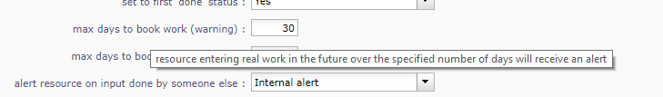
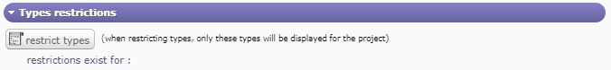
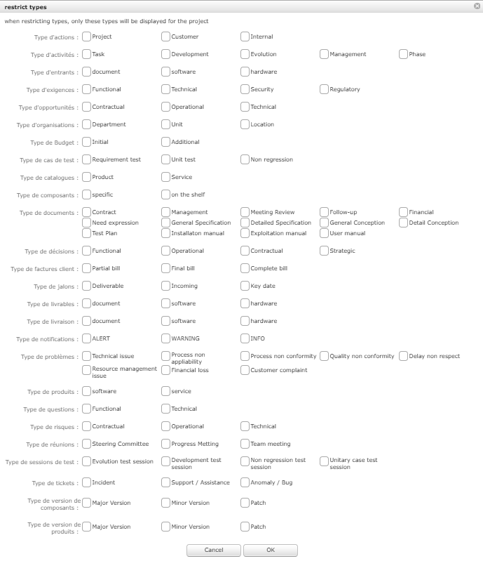
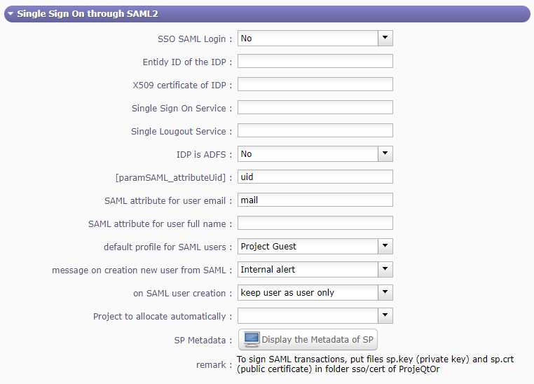
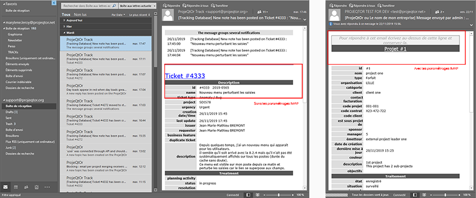
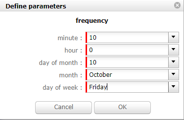
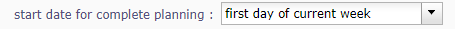

Global Parameters¶
Global parameters screen allows configuration of application settings.
depending on the modules installed, some tabs may not appear.
Tip
Good to know
Moving the mouse over the caption of a parameter will display a tooltip with more description about the parameter.
Tab Work time¶
Work time sections
Daily work hours
Definition of the hours of work applied in your company.
Used to calculate delays based on “open hours”.
Open days
Possibility to define the working days in the company.
For each day of the week, you can choose between open days or off days.
See: Resource section Calendars
Note
This parameter are taken into account in : working days on calendars, the working days on the calculation and the display, the working days on the display of real work allocation.
Units for work
Parameters to determine the units used to calculate the actual work
Unit for Timesheet (real work) & Unit for Workload
Parameters to real work allocation and workload.
The fields Unit for real work allocation and for all work data can be in days or hours.
Number of hours per day
Allows to set number of hours per day.
Warning
If both values are different, rounding errors may occur.
Remember that data is always stored in days.
Duration will always be displayed in days, whatever the workload unit.
Timesheet
Defines behavior of tasks in the real work allocation screen.
Display only handled tasks
Display only tasks with “handled” status.
Set to first ‘handled’ status
Change status of the task to the first “handled” status when real work is entered.
Set to first ‘done’ status
Change status of the task to the first “done” status when no left work remains.
Max days to book work (warning) :
Number of days that user can enter real work in the future before getting a warning.
This parameter does not apply to administrative projects
Max days to book work (blocking)
Number of days that user can enter real work in the future. This limit is blocking.
This parameter does not apply to administrative projects.
Alert resource on input done by someone else
Select your type of alert : Internal, Email, both or none.
Display pools on timesheet
Possibly to display the pool whose the resource belongs to.
You can manage different trigger settings per recipient
Warning
Resources that do not have access to the imputations screen do not receive these alerts
After submit, alert to project leader
After submission what type of alert would you want to send to the project leader
After submit, alert to team manager
After submission what type of alert would you want to send to the team manager
After submit, alert to organism manager
After submission what type of alert would you want to send to the organism manager
Tab Activity¶
Activity tab’s sections
Planning
Specific parameters about Gantt planning presentation.
Show resource in Gantt
Select if the resource can be displayed in a Gantt chart, and format for display (name or initials or none).
Max projects to display
Defines maximum number of projects to display.
To avoid performance issues.
Apply strict mode for dependencies
Defines if a task can begin the same day as the preceding one.
If yes, the successor should begin the next day
If no, the successor can start the same day.
Tickets
Specific behavior for ticket management
Only responsible works on ticket
Only responsible can enter some real work on the ticket.
Ticket responsible from product Responsible
Select if the product Responsible is displayed ( always, if empty, never) as Ticket Responsible on that screen
Limit planning activity to those whit flag
Display planning activity selected for the ticket
Enable to filter ticket reports by priority
Can display tickets on Report screen by level of priority
Display ticket at customer level
Display of tickets on the Customer screen and on the Contacts screen
Display ticket at version level
Display of tickets on the version screen
Manage accontable on ticket
Display the coordinator as Accountable, so the Responsible is the current actor
Organization
Specific parameter for Organization management
Use budget feature for organizations
If yes, can display and work on budget for an organization.
Automation
Parameters to manage automations
Consolidate validated work & cost
Select if validated work & cost are consolidated on top activities and therefore for projects :
Never: Not consolidated
Always: Values are replaced on activities and project.(erase parents)
Only is set: Replaces values ( excepted if set by null or stay not indicated,do not erase parents)
Consolidation work¶
Auto set Responsible if single resource:
Behavior about management of responsible, including automatic initialization of responsible.
Automatically set Responsible if not set and by the only one resource allocated to the project
Auto allocated the Manager to the project:
Automatically create an allocation for the project Manager to the project. He should be a resource.
Auto set a Responsible if needed:
Automatically set Responsible to current resource (as using the element) if not set and if a Responsible is required (respecting access rights)
Auto assign Responsible to activity:
Assign automatically the Responsible to activities
Update milestone from deliverable: (Have to link elements)
Update milestone Responsible automatically when the Responsible of deliverable has changed.
Update milestone from incoming: (Have to link elements)
Update milestone Responsible automatically when the Responsible of deliverable has changed.
Update deliverable from milestone (have to link elements):
Update deliverable Responsible automatically when the Responsible of mielstone has changed.
Update incoming from milestone (have to link elements):
Update incoming Responsible automatically when the Responsible of milestone has changed.
Auto set parent activity status:
Auto set status of parent activity from the status of children activity.
Manual progress of fixed-duration activities:
Allows you to manually enter a value in% in the progress field in the “steering” detail area on all the elements that proposes a duration
Milestones
Specific parameters for Milstones management
Manage target milestone
It updates the target (planned) date of the element (on Requirements, Tickets, Product Versions, Incomings, Deliverables and Deliveries) from the planned date of the milestone.
Auto link the milestone
It optionally allows you to display the element linked to the milestone (The option above should be on “yes” to have access to the selection of milestone targetted)
Set milestone from product version
It optionally allows you to automatically retrieve the milestone from the milestone of the Project Version.
Controls and restrictions
Specific parameters for the control and management of restrictions
allow the type restriction on project
Allow to define additional restriction’s type on each project additionally to restrictions defined at project type level.
If so, a Restrict Types button appears in the detail area and allows you to define the type restriction .
Restriction on types by profil hides items
If set to yes, users with profiles won’t see items of unselected types
If set to no, users will just not have possibility to create new items with such types
Restrict type box¶
Tab Display¶
Display tab’s sections
Display
Graphic interface behavior and generic display parameters.
Name of the instance
Change the window’s name. The name appears at the top center of the window
Display in fading mode
Transition between screen changes in flash or fade mode.
Max items to display in Today lists
Limit the display of the “today list”. items are generally ordered by issue date increasing
Quick filtering by status
Display one button. Allow to filter on lists the element by status checking boxes. Refresh to make appear on boxe a new state just created on list .
Localization
Choose how the monetary units behave in your area
Currency
Choose your symbol displayed on each monetary box
Currency position for cost display
Symbol sets before or after each monetary box
Default values
Default values for user
Default language
Choose among 19 languages / easy come back with translation in target language
Default theme
More than 30 themes choices
First page
Choice of the first visible screen after the connection.
Icone size in menu
Icon size are default : user can overwrite these values
Display of the upper menu
Icones are hidden or no.
Display of the left menu
Appears by icones or in wide mode
Display history
No
Yes, yes with work indicated on the bottom of the page
On request with a specific button:
Editor for rich text
Choose your favorite text editor
Activate the spell checker in CK editor
Yes or no
Not applicable value
Choice of the symbol defining the non-applicable values.
On the global view the value of the field that has no applicable value for the given column will display this symbol
Restric project list
When creating an element, name of the project stays like than the one selected at the selector or on contrary offers choice on global list of projects
Displaying notes in discussion mode
Display of notes in discussion mode with indentation for answers
Tab References¶
References tab’s sections
Format for reference numbering
Sections for format references
Prefix format for reference
Allows to define reference formats for items of element, documents and bills.
Can contain prefix :
{PROJ} for project code,
{TYPE} for type code,
{YEAR} for current year
{MONTH} for current month.
Change reference on type or project change
Change the reference on type change of element will generate missing numbers in reference
Document reference format
Sections for document format references
Document reference format
Format can contain :
{PROJ} for project code,
{TYPE} for type code,
{NUM} for number as computed for reference,
{NAME} for document name.
You can allow or forbid downloading locked files in this section
Version reference suffix
Suffix can contain :
{VERS} for version name.
Separator for draft in version name
Choose the sign for the separator of the draft
Preserve uploaded file name
If yes, the file is downloaded with the name of original file
If no, the document take the reference formatted name
Forbid download of locked document
Forbid document download if yes is checked
Bill reference format
Sections for bill format references
Bill reference format
Reference format : can contain {NUM} for version name.
Number of digit for bill number
Choice of the number of digits to display in an invoice.
Tab Configuration¶
References tab’s sections
Product and Component
New menu context in product and component configuration
{kind=link}
This menu contains all the parameters for configuration management
Display Business features
Filter on date
Display the start and delivery milestones
Display start and delivery milestones for product/component version and delivery dates in flat structure
Display language in Product/Component (Version)
Enable language
Display contexts in Product/Component (Version)
Enable contexts
Display Tenders on Products, Components, Versions
Display a section to list linked Tenders on products, component, product version and component versions
List of activity on component version
Display the list of activity
Direct access to product / component full list
When selecting a component, we go directly to the full list (with filter capacity), without going through the pop-up window
Automatic format of version name
Ability to choose a preformatted format for version names
Separator between name and number
Choose the character of the separator for version names
Auto subscription to versions
Suscription automatic to versions or components when you suscribe to product or component
Types of copy of Component Version
You can choose between :
Free choice
Copy structure from origin version
Replace the origin version with new copied one
Enable Product Versions compatibility management
Display compatibility section in product version details
Display product version on delivery
Allows to link a delivery to product version
Sort versions combobox in descending order
Change sort order for versions in combobox to have more recent first (descending on name)
Sort version composition and structure on type
Sort version composition and structure by type ascending and name descending
Manage component on requirements
Manage component and target component version on requirements
Do not add closed and delivered versions to a project
When adding a product to a project, do not add its closed and delivered versions
Allow activities on delivered version
Include delivered products versions in target product version list for activities
Automatically set component version if unique
Automatically set component version if there is only one component version of the selected component that is linked to the selected product version
Tab Financial¶
References tab’s sections
Input of amounts for expenses
Parameters for choosing the input method for expenditure amounts
Input mode for amounts
Defined for expenses items if the amounts must be entered without taxes and calculated in with taxes or vice versa
Input mode for bill lines
Defined for expenses items if the total bill lines feed the total with or without taxes. The parameter is priority if there a bill lines
Input of amounts for incomes
Parameters for choosing the method of entering income
Input mode for amounts
Defined for incomes items if the amounts must be entered without taxes and calculated in with taxes or vice versa
Input mode for bill lines
Defined for icomes items if the total bill lines feed the total with or without taxes. The parameter is priority if there a bill lines
Tab Mailing¶
References tab’s sections
Emailing
Parameters to allow the application to send emails.
You define the administrator’s email with the possibility of choosing a different address for “from” and “reply to” and the name to display
You configure the SMTP serveur and port - the login name and password
You can also define the sendmail path or the send method
Mail titles
Mail titles section¶
Parameters to define title of email depending on event.
See: Automatic emails grouping
It is possible to use special fields to call a function or data of the project.
See: Special Fields
Automatic emails grouping
Parameters to define if the email group is active or not
Activate email grouping
When emailing grouping is activated, automatic emails sent during the defined period are grouped into a single mail
Grouping period (in seconds)
Defines the period (in seconds) during which if an email is send after another on same item,
Then emails are grouped into single one
How to treat different formats
If grouped emails refer to different templates, you can :
send all messages, one for each template
Only send the last message
Merge all messages and send a single email
You’ll can see this email in the email to send screen in the Tools menu
Test email configuration
You can test the settings of your email submissions
Send email to
Sent a email to check sptm configuration.
Warning
This operation saves global parameters
Tab Authentication¶
Authentication’s sections
User and password
Parameters to manage how the connection behaves
Security constraints about users and passwords
You can choose the default profile and password
You can choose to block the user after x connection attempts
You can define the behavior’s password with the min length ord the validy period
You can display or no the check box on the login screen “remember me”
You can initialize password on user creation and defined a new password to random value
LDAP Management Parameters
All the necessary parameters for connecting your projeqtor instances with your corporate LDAP
LDAP¶
Set the base dn, host, port, version…
Default profile for Ldap users, message on creation new user from Ldap,
Actions on LDAP user creation
Project to allocate automatically…
Single Sign On SAML2
Single sign-on is a method that allows a user to access multiple computer applications (or secure websites) by performing a single authentication.

With the single sign on you do not go through the login screen of projeqtor but by a screen dedicated to single sign-on¶
When connected to the SSO service, the service tells each application that the user is logged on.
This avoids having to connect to applications one by one.
In concrete terms, the site or service to which the user is trying to connect makes a request to the server or the identity provider’s site. This one asks if the user is connected. If so, he transmits the information.
Depending on the protocol used, the two sites exchange keys, signatures and / or other information to verify the identity of the user.
Disconnection screen¶
When you want to disconnect from ProjeQtOr with the SSO method, the logout screen gives you several options.
local disconnection of projeqtor. I do not leave my SSO session
Internal reconnection: I reconnect to ProjeQtOr locally. I leave my SSO session. I should identify myself again
SSO disconnect. I leave my SSO session. I should identify myself again
Parameters
This is an SSO connection via the SAML2 protocol
Global parameters: LDAP¶
Set the Entity ID, the IDP certificate, the single sign on and logout…
Default profile for users, message on creation new user from SAML,
And some parameters for users
Tab Automation¶
Authentication’s sections
Management of automated service
Parameters for the Cron process.
Defined frequency for these automatic functions
It will manage :
Alert generation: Frequency for recalculation of indicators values.
Check alert: Frequency for client side browser to check if alert has to be displayed.
Import: Automatic import parameters as below.
Warning
Cron working directory should be set out of the path web..
Automatic import of files

Automatic import of files¶
Automatic import settings for cron processes.
Warning
Directory of automated integration files should be set out of the path web.
Automatic import of replies to emails
Defined parameters for the “Reply to” process It will manage connection to IMAP INBOX to retrieve email answers.
Email input check cron delay (in seconds)
Delay of -1 deactivates this functionality.
Email reception
When you have completed the IMAP settings for receiving emails, you receive your email with a new header. See the image below.
You always find the name of the item that is related to your application. A single click takes you to the item page.
The line in the header tells you where your answer should be positioned to allow you to retrieve the response text in your ProjeQtor instance without the original message.
Signing start identifier
When you have completed the IMAP settings for receiving emails, you receive your email with a new header. See the image below.
The fields allows you to identify the beginning of your signature in order to avoid retrieving the signature in the response.
For example, enter, so that ProjeQtOr recognizes that your signature begins with this word. He will not take back everything behind.
Note
IMAP host
Must be an IMAP connection string.
To connect to GMAIL input box, host must be: {imap.gmail.com:993/imap/ssl}INBOX
You must set these parameters if you want to use the Not receive his own mails option in the user settings
Automatic planning calculation
Activated or desactived this feature by simple click
Differential calculation
Project planning is recalculated only for those who need to be. A data or more has been changed into the project so a new calculation is expected.
Complete calculation
All projects planning are recalculated.
You can choose the option Automatic feed of the real which will inform the real work according to the planned dates.
Note
Select the frequency of the calendar by clicking on the button defined parameters and choose the schedule, day, month.
Note
Start date for…
Select when you want to recalculate project(s)according the date of today’s date
Generation of alerts for real work
Specific settings for alerts based on a profile.
An email is sent on the agreed date. Click on the button Defined Parameters
See: Management of automated service to set the send frequency.
Generation parameters for the Resource/Project leader and Team Manager
Select the frequency of the calendar with which the emails will be generated and sent to the profile
When and How
Control input up to
Select when you want to be controlled. Current day, previous day or next days.
Number of days to control
Choose how many days will be controled
Send alert to resource
Choose how alerts will be sent, Internal alert, email, both or none
Warning
All days of the week, open or off days are taken into account.
Off days in real work allocation will not send you an alert.
Tab System¶
Authentication’s sections
Files and directories
Definition of directories and other parameters used for Files and documents management.
Warning
Attachments Directory and Root directory for documents Should be set out of web reach.
Temporary directory for reports Must be kept in web reach.
Localization data
Parameters to define character sets, their encoding, their behavior … for saving files on the server
Charset to save files on server
Keep empty for Linux servers, files names will be stored in UTF8.
For windows OS server, define charset as “windows-1252” (for western europe) or similar corresponding to your localization.
Separator for CSV files
Choose the field separator for csv exports
Export CSV to UTF-8 format
Preserve UTF-8 for exported csv files. If set no, will encode in CP1252 (recommended for windows in English and western Europe Languages)
Miscellaneous
Settings for the update
Check for new version
Auto check (or not) for existing new version of the tool (only administrator is informed);
PDF export
Basic settings for PDF exports
Memory limit for PDF generation.
Size In MB. Too small can lead to PDF error but too big can crash the server
Font for PDF Export.
Freesans give great portability for non ANSI characters - Helvetica give smaller PDF files.
SSL connection to database
Allows to set up a secure SSL connection:
SSL Key
SSL Certification
SSL Certificate Authority
Enter patch to corresponding files to enable SSL connection to the database.
Warning
Take care that these files must exist and be valid SSL files.
If values are incorrect, the application will not work any more, and you’ll have to manually fix parameters in the database.
Special Fields¶
Special fields can be used in the title and body mail to be replaced
by item values :
${dbName} the display name of the instance
${id} id of the item
${item} the class of the item (for instance “Ticket”)
${name} name of the item
${status} the current status of the item
${project} the name of the project of the item
${type} the type of the item
${reference} the reference of the item
${externalReference} the external reference of the item
${issuer} the name of the issuer of the item
${responsible} the name of the responsible for the item
${sender} the name of the sender of email
${sponsor} the name of the project sponsor
${projectCode} the project code
${contractCode} the contact code of project
${customer} Customer of project
${url} the URL for direct access to the item
${login} the user name
${password} the user password
${adminMail} the email of administrator